Hermes2D Tutorial: Part I (Linear Problems)¶
This tutorial should give you a good idea of how Hermes works. It begins with eight sections related to Hermes2D (six tutorial sections, benchmarks, and examples). Then we discuss selected examples for Hermes1D and several benchmarks and examples for Hermes3D.
After reading the tutorial, you will be able to create your own applications and/or adjust existing Hermes examples for your purposes. At the beginning of every section we give a reference to the corresponding example in the Hermes git repository – there you will always find the corresponding main.cpp file, weak forms, mesh file, etc.
This document is under continuous development and certainly it is not perfect. If you find bugs, typos, dead links or such, help us improve it by reporting them through one of the mailing lists for Hermes1D, Hermes2D, or Hermes3D. We are looking forward to your feedback!
Finite Element Mesh (01)¶
Git reference: Tutorial example 01-mesh.
Every finite element computation starts with partitioning the domain into a finite element mesh. Hermes uses (possibly curvilinear) triangles and quadrilaterals that can be combined together in one mesh. While non-adaptive or low-order finite element codes need fine initial meshes constructed using specialized mesh generation software, in Hermes it usually suffices to create a simple initial mesh and use a variety of built-in functions for a-priori mesh refinement. In most cases, automatic adaptivity will take care of the rest.

The domain in this example is defined via four macroelements – two quadrilaterals and two curvilinear triangles. The elements are enumerated from 0 to 3. One also needs to enumerate all mesh vertices and assign markers to all boundary edges. Boundary markers are used to link boundary conditions with the boundary edges.
Mesh File Format¶
Hermes can read meshes in its own generic format as well as in the ExodusII format (this is, for example, the output of Cubit). First let us discuss the generic Hermes mesh data format. Reading of ExodusII mesh files is very simple as we will see in example iron-water.
Generic Hermes mesh file consists of variable assignments. Each variable can hold a real number, list of real numbers, or list of lists. The following are all valid definitions in the Hermes mesh file format:
# comments start with a hash
var = 5.0 + cos(pi) # number
list = { 1, 2, 3, 4, var } # list
pairs = { {1, 2}, {1, var}, {0, list} } # list of lists
Every mesh file must contain at least the variables vertices, elements and boundaries. The variable vertices defines the coordinates of all mesh vertices (in any order). In our case it looks like this:
a = 1.0 # size of the mesh
b = sqrt(2)/2
vertices =
{
{ 0, -a }, # vertex 0
{ a, -a }, # vertex 1
{ -a, 0 }, # vertex 2
{ 0, 0 }, # vertex 3
{ a, 0 }, # vertex 4
{ -a, a }, # vertex 5
{ 0, a }, # vertex 6
{ a*b, a*b } # vertex 7
}
The variable elements defines all elements in the mesh via zero-based indices of their vertices in counter-clockwise order, plus an extra number denoting the element (material) marker. Element markers allow you to use different material parameters in areas with different material parameters. Moreover, Hermes allows you to assign different weak formulations to those areas, which can be very useful for some types of multiphysics problems. If the domain is composed of only one material, as in our case, all elements may be assigned a zero marker:
elements =
{
{ 0, 1, 4, 3, 0 }, # quad 0
{ 3, 4, 7, 0 }, # tri 1
{ 3, 7, 6, 0 }, # tri 2
{ 2, 3, 6, 5, 0 } # quad 3
}
The last mandatory variable, boundaries, defines boundary markers for all boundary edges. By default, all edges have zero markers. Only those with positive markers are considered to be part of the domain boundary and can be assigned a boundary condition, as we will see later. An edge is identified by two vertex indices. In our case, we have
boundaries =
{
{ 0, 1, 1 },
{ 1, 4, 2 },
{ 3, 0, 4 },
{ 4, 7, 2 },
{ 7, 6, 2 },
{ 2, 3, 4 },
{ 6, 5, 2 },
{ 5, 2, 3 }
}
Finally, the file can also include the variable curves, which lists all curved edges. Each curved edge is described by one NURBS curve, defined by its degree, control points and knot vector. Simplified syntax is available for circular arcs.
NURBS Curves¶
Every NURBS curve is defined by its degree, control points with weights and the
knot vector. The degree  is a positive integer, usually 1, 2, 3 or 5. Lines
and polylines are of degree 1, circles have degree 2 and free-form curves are
of degree 3 or 5. The control points 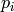, 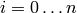, are the main tool for changing the
shape of the curve. A curve of degree must have at least 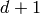 control
points. In Hermes, the endpoints of the edge are always assumed to be the
first and last control points and therefore only the inner control points are
listed in the mesh file. There is a weight 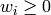 for every control point,
that influences the shape of the curve in its vicinity. If 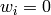 then
has no effect on the shape. As
is a positive integer, usually 1, 2, 3 or 5. Lines
and polylines are of degree 1, circles have degree 2 and free-form curves are
of degree 3 or 5. The control points 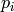, 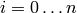, are the main tool for changing the
shape of the curve. A curve of degree must have at least 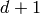 control
points. In Hermes, the endpoints of the edge are always assumed to be the
first and last control points and therefore only the inner control points are
listed in the mesh file. There is a weight 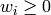 for every control point,
that influences the shape of the curve in its vicinity. If 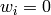 then
has no effect on the shape. As  increases, the curve is pulled
towards .
increases, the curve is pulled
towards .
The knot vector is a sequence of 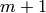 values that determines how much and where the control points influence the shape. The relation 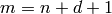 must hold. The sequence is nondecreasing, 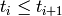, and divides the whole interval 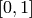 into smaller intervals which determine the area of influence of the control points. Since the curve has to start and end at the edge vertices, the knot vector in Hermes always starts with zeros and ends with ones. Only the inner knots are listed in the above definition of the variable curves, where 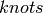 is a simple list of real values. For the above example, we have
curves =
{
{ 4, 7, 45 }, # +45 degree circular arcs
{ 7, 6, 45 }
}
# EOF
Loading Mesh¶
As a ‘’Hello world’’ example, let us load the mesh we have just created, and display it in a window. Every main.cpp file in the git repository contains lots of comments and instructions. Skipping those, the main.cpp file begins with creating an instance of the class Mesh. In order to load the mesh file, you have to create a mesh loader class (in our case that is H2DReader) and call the method load():
#include "hermes2d.h"
int main(int argc, char* argv[])
{
// Load the mesh file.
Mesh mesh;
H2DReader mloader;
mloader.load("domain.mesh", &mesh);
Note: To load the exodus-II mesh file, one has to use ExodusIIReader class instead.
The following portion of code illustrates various types of initial mesh refinements. It does not matter if the mesh becomes irregular, in fact, arbitrarily irregular meshes are at the heart of Hermes:
// Perform some sample initial refinements.
mesh.refine_all_elements(); // refines all elements
mesh.refine_towards_vertex(3, 4); // refines mesh towards
// vertex #3 (4x)
mesh.refine_towards_boundary(2, 4); // refines all elements
// along boundary 2 (4x)
mesh.refine_element(86, 0); // refines element #86
// isotropically
mesh.refine_element(112, 0); // refines element #112
// isotropically
mesh.refine_element(84, 2); // refines element #84
// anisotropically
mesh.refine_element(114, 1); // refines element #114
// anisotropically
Other ways of modifying meshes on the fly include:
Mesh::refine_element(int id, int refinement = 0);
Mesh::convert_quads_to_triangles();
Mesh::convert_triangles_to_quads();
Mesh::refine_by_criterion(int (*criterion)(Element* e), int depth);
Mesh::refine_towards_vertex(int vertex_id, int depth);
Mesh::regularize(int n);
Mesh::unrefine_element(int id);
Mesh::unrefine_all_elements();
See the file src/mesh.cpp for more details. The following code illustrates how to visualize the mesh using the class MeshView:
// Display the mesh.
// (0, 0) is the upper left corner position
// 350 x 350 is the window size
MeshView mview("Hello world!", new WinGeom(0, 0, 350, 350));
mview.show(&mesh);
You can initialize it by supplying the title of the window and its initial position and size (all of these parameters are optional). The class MeshView provides the method show() that displays a window showing the mesh:

To see the graphical output, the main.cpp file should be finished with:
// Wait for the view to be closed.
View::wait();
return 0;
}
Setting Up Finite Element Space (02)¶
Git reference: Tutorial example 02-space.
Hermes follows the mathematical concept of FEM closely – after creating a mesh, in the next step one needs to construct a finite element space on it. The following predefined spaces are currently available:
- H1Space - the most common space of continuous, piecewise-polynomial functions belonging to 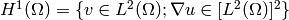,
- HcurlSpace - space of vector-valued functions discontinuous along mesh edges, with continuous tangential component on the edges 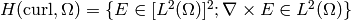,
- HdivSpace - space of vector-valued functions discontinuous along mesh edges, with continuous normal component on the edges 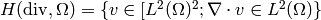,
- L2Space - space of functions discontinuous along mesh edges, belonging to the space 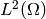.
All these spaces allow for higher-order elements, meshes with arbitrary-level hanging nodes, and automatic hp-adaptivity. If you are not familiar with higher-order FEM, let us just say that the spaces can contain quadratic, cubic, etc., edge functions that generate higher-degree polynomials along mesh edges, and bubble functions that complete the higher-order approximation in element interiors. Edge functions are associated with mesh edges, and bubble functions with element interiors. The next figure shows a higher-order edge function (left) and a higher-order bubble function (right).

Higher-order basis functions can be defined in many different ways. A particular set of polynomials is called shapeset. Using a good shapeset is crucial for the performance of the hp-FEM. No shapeset can be optimal for all possible operators. Therefore, Hermes offers several shapesets from which you need to choose one when creating a FE space. The ones which perform best in most computations (according to our experience) are simply called H1Shapeset, HcurlShapeset, HdivShapeset and L2Shapeset. Others can be found in the directory src/shapeset/.
We are now ready for an example. The following is (up to some omitted comments) the complete main.cpp file of the example 02-space:
#include "hermes2d.h"
int P_INIT = 3;
int main(int argc, char* argv[])
{
// Load the mesh.
Mesh mesh;
H2DReader mloader;
mloader.load("domain.mesh", &mesh);
// Create an H1 space with default shapeset and natural BC.
H1Space space(&mesh, NULL, NULL, P_INIT);
// View FE basis functions.
BaseView bview("FE Space", new WinGeom(0, 0, 440, 350));
bview.show(&space);
// Wait for the view to be closed.
View::wait();
return 0;
}
An instance of H1Space is initialized with four arguments:
- Pointer to a mesh,
- function providing boundary condition types for all boundary markers (NULL means natural boundary conditions on the entire boundary),
- function providing values of essential (i.e., Dirichlet) boundary conditions for all essential boundary markers (NULL here since all BC are natural),
- uniform initial polynomial degree of all mesh elements.
Polynomial degrees of elements can also be set individually by calling the method Space::set_element_order() or for all elements at once using Space::set_uniform_order(). Note that element degrees are stored in Space, not in Mesh. The reason is that in Hermes one can have multiple spaces with different element degrees and even types over the same mesh. In Hermes, Mesh only stores geometrical information. A space created in this way is ready for use.
As a debugging/learning feature, Hermes can visualize the basis of each Space. Similarly to MeshView, one can create a BaseView object and use it to display the entire basis (VectorBaseView has to be used for vector-valued approximations in spaces Hcurl and Hdiv - this will be discussed later). One can cycle through all basis functions in the window using the arrow keys. If you press the left mouse button at the beginning, you will see the Dirichlet lift (a function that represents Dirichlet boundary conditions).
This is how the last figure above was obtained (press the ‘3’ key for 3D mode). We suggest that you spend some time experimenting with element refinements and hanging nodes to see how basis functions on irregular meshes look like.
Solving Poisson Equation (03)¶
Git reference: Tutorial example 03-poisson.
Let us solve the Poisson equation
(1)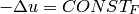
on the L-shaped domain  from the previous example,
equipped with homogeneous (zero) Dirichlet boundary conditions
from the previous example,
equipped with homogeneous (zero) Dirichlet boundary conditions
(2)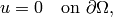
where 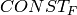 is a real number. The weak formulation
is derived in the standard way, first by multiplying equation (1) with a test
function  , then integrating over the domain , and then applying the Green’s
theorem (integration by parts) to the second derivatives.
Because of the homogeneous Dirichlet condition (2),
the proper space for the solution is 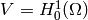. The weak formulation reads:
Find 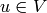 such that
, then integrating over the domain , and then applying the Green’s
theorem (integration by parts) to the second derivatives.
Because of the homogeneous Dirichlet condition (2),
the proper space for the solution is 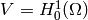. The weak formulation reads:
Find 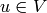 such that
(3)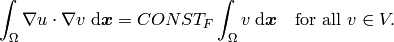
Equation (3) has the standard form 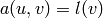. The bilinear form 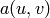 and the linear form 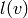 are defined as follows:
// Return the value \int \nabla u \cdot \nabla v dx.
template<typename Real, typename Scalar>
Scalar bilinear_form(int n, double *wt, Func<Scalar> *u_ext[], Func<Real> *u, Func<Real> *v, Geom<Real> *e, ExtData<Scalar> *ext)
{
Scalar result = 0;
for (int i = 0; i < n; i++) result += wt[i] * (u->dx[i] * v->dx[i] + u->dy[i] * v->dy[i]);
return result;
}
// Return the value CONST_F \int v dx.
template<typename Real, typename Scalar>
Scalar linear_form(int n, double *wt, Func<Scalar> *u_ext[], Func<Real> *v, Geom<Real> *e, ExtData<Scalar> *ext)
{
Scalar result = 0;
for (int i = 0; i < n; i++) result += wt[i] * (v->val[i]);
return CONST_F * result;
}
These functions are called for each element during the assembly and they must return the values of the bilinear and linear forms for the given arguments. The arguments have the following meaning:
- n ... the number of integration points (provided by Hermes automatically),
- wt ... array of integration weights for all integration points,
- u_ext ... solution values (for nonlinear problems only, to be discussed later),
- u ... basis function,
- v ... test function,
- e ... geometrical information such as physical positions of integration points, tangent and normal vectors to element edges, etc. (to be discussed later),
- ext ... external data to be passed into the weak forms (to be discussed later).
The reader does not have to worry about the templates for now - they are used by Hermes to automatically determine the number of integration points for each u and v pair (to be discussed later). The code also reveals how the function values and partial derivatives of the basis and test functions are accessed.
In many cases, such as in this one, one can replace the above code with simple predefined functions that can be found in the file integrals_h1.h:
// Return the value \int \nabla u . \nabla v dx.
template<typename Real, typename Scalar>
Scalar bilinear_form(int n, double *wt, Func<Scalar> *u_ext[], Func<Real> *u, Func<Real> *v, Geom<Real> *e, ExtData<Scalar> *ext)
{
return int_grad_u_grad_v<Real, Scalar>(n, wt, u, v);
}
// Return the value \int v dx.
template<typename Real, typename Scalar>
Scalar linear_form(int n, double *wt, Func<Scalar> *u_ext[], Func<Real> *v, Geom<Real> *e, ExtData<Scalar> *ext)
{
return CONST_F * int_v<Real, Scalar>(n, wt, v);
}
Predefined functions like this also exist for the Hcurl, Hdiv and L2 spaces. The weak forms are registered as follows:
// Initialize the weak formulation.
WeakForm wf();
wf.add_matrix_form(callback(bilinear_form));
wf.add_vector_form(callback(linear_form));
The reader does not have to worry about the macro callback() for the moment, this is related to automatic determination of integration order (to be discussed later). For more complicated PDE and PDE systems one can add multiple matrix and vector forms. With the space and weak formulation in hand, the problem can be solved simply via:
// Solve the linear problem.
Solution sln;
solve_linear(&space, &wf, SOLVER_UMFPACK, &sln);
The parameter SOLVER_UMFPACK indicates that we are using the direct sparse matrix solver UMFpack. Other options include SOLVER_PETSC, SOLVER_MUMPS, SOLVER_PARDISO, a variety of SciPy matrix solvers and others (to be discussed later).
The solution can be visualized via the ScalarView class:
// Visualize the solution.
ScalarView view("Solution", new WinGeom(0, 0, 440, 350));
view.show(&sln);
The following figure shows the output of this example (again, press ‘3’ for 3D view).

Short and Long Versions of Examples¶
Some tutorial examples come in two versions: A short one that is intended for effortless basic use, and a long one that is more explicit and thus more convenient for development. The first example with a long version is 03-poisson.
Git reference: Tutorial example 03-poisson-long.
The long version does not employ the function solve_linear(). Instead, after initializing the weak formulation, one initializes the LinearProblem class:
// Initialize the linear problem.
LinearProblem lp(&wf, &space);
This class is a descendant of a more general DiscreteProblem class that handles nonlinear problems. Next we initialize the matrix solver and the corresponding matrix and vector structures:
// Select matrix solver.
Matrix* mat; Vector* rhs; CommonSolver* solver;
init_matrix_solver(SOLVER_UMFPACK, ndof, mat, rhs, solver);
Again, other matrix solvers besides SOLVER_UMFPACK can be used. The variable ndof stands for the number of degrees of greedom (unknowns in the discrete problem) that can be calculated after initializing a Space:
int ndof = get_num_dofs(&space);
Assembling is done into the user-provided data structures:
// Assemble stiffness matrix and rhs.
lp.assemble(mat, rhs);
After this, the matrix problem is solved:
// Solve the matrix problem.
if (!solver->solve(mat, rhs)) error ("Matrix solver failed.\n");
And finally, the solution vector is translated into a Solution:
// Convert coefficient vector into a Solution.
Solution* sln = new Solution(&space, rhs);
For this, one can also use the method Solution::set_coeff_vector():
// Convert coefficient vector into a Solution.
Solution sln;
sln.set_coeff_vector(&space, rhs);
Visualization and the rest of the main() function are the same as in the short version.
Boundary Conditions (04, 05, 06)¶
Hermes recognizes two basic types of boundary conditions: essential and natural. Essential boundary conditions (prescribed values on the boundary) influence the finite element space while natural conditions do not - they are incorporated into boundary integrals in the weak formulation. In the context of elliptic problems, Dirichlet conditions are essential and Neumann/Newton conditions are natural.
Examples 04, 05 and 06 also come in long versions but we will not discuss them explicitly since they are analogous to the long version of example 03.
Dirichlet BC¶
Git reference: Tutorial example 04-bc-dirichlet. Long version: 04-bc-dirichlet-long.
Since essential boundary conditions eliminate degrees of freedom (DOF) from the FE space, they need to be incorporated while the space is set up. The user has to provide the following two callback functions:
BCType bc_types(int marker);
scalar essential_bc_values(int ess_bdy_marker, double x, double y);
The first one takes as argument a boundary marker number, and it determines the type of BC for the corresponding portion of the domain boundary, by returning one of the predefined constants BC_ESSENTIAL, BC_NATURAL. The second callback needs to return the boundary value for a given marker and position on the boundary (only needed for essential boundary condition markers - for natural boundary conditions this value is ignored). The space initialization then consists of the following line:
H1Space space(&mesh, bc_types, essential_bc_values, P_INIT);
Here P_INIT is the initial polynomial degree of all elements in the mesh as before. Suppose that we would like to modify the boundary conditions for the previous Poisson model problem as follows:
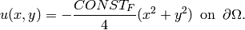
This is done by defining
BCType bc_types(int marker)
{
return BC_ESSENTIAL;
}
and setting the essential BC values callback to return the value of the Dirichlet BC:
scalar essential_bc_values(int ess_bdy_marker, double x, double y)
{
return (-CONST_F/4)*(x*x + y*y);
}
It is easy to see that the solution to this problem is the function
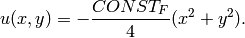
For the value  , the output is shown below:
, the output is shown below:

Neumann BC¶
Git reference: Tutorial example 05-bc-neumann. Long version: 05-bc-neumann-long.
Next, let us consider Neumann boundary conditions. The new model problem will have the form
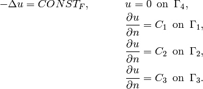
where 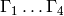 correspond to the edges marked 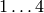. Now, the weak formulation contains some surface integrals:
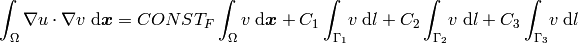
In Hermes, all forms in the standard weak formulation are in fact defined as a sum of contributions from volume integrals and from surface integrals. In the case of the linear form , this means
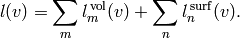
We have already seen volumetric linear forms in example 03-poisson. Surface linear forms are implemented similarly. Our new right-hand side is represented by two functions with the following prototypes:
template<typename Real, typename Scalar>
Scalar linear_form(int n, double *wt, Func<Scalar> *u_ext[], Func<Real> *v, Geom<Real> *e, ExtData<Scalar> *ext)
template<typename Real, typename Scalar>
Scalar linear_form_surf(int n, double *wt, Func<Scalar> *u_ext[], Func<Real> *v, Geom<Real> *e, ExtData<Scalar> *ext);
and registered as follows:
// Initialize the weak formulation
WeakForm wf();
wf.add_matrix_form(callback(bilinear_form));
wf.add_vector_form(callback(linear_form));
wf.add_vector_form_surf(callback(linear_form_surf));
The surface linear form is defined as:
template<typename Real, typename Scalar>
Scalar linear_form_surf(int n, double *wt, Func<Scalar> *u_ext[], Func<Real> *v, Geom<Real> *e, ExtData<Scalar> *ext)
{
return CONST_GAMMA[e->marker - 1] * int_v<Real, Scalar>(n, wt, v);
}
Here, we have used the predefined surface integral int_v (see the file src/integrals_h1.h). If the boundary conditions were more complicated, we could also have used int_F_v, where F stands for an arbitrary user-supplied function returning the value 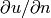.
Note that in this example, the mesh is a-priori refined towards the re-entrant corner to capture the singular gradient:
mesh.refine_towards_vertex(3, CORNER_REF_LEVEL); // '3' is the vertex index from the mesh file.
The gradient magnitude can be visualized via a MagFilter:
// Compute and show gradient magnitude
// (note that the infinite gradient at the re-entrant
// corner will be truncated for visualization purposes)
ScalarView gradview("Gradient", grad_win_geom);
MagFilter grad(Tuple<MeshFunction>(&sln, &sln), Tuple<int>(H2D_FN_DX, H2D_FN_DY));
gradview.show(&grad);
Here we first meet Tuple - a construction designed to avoid variable argument lists. The first Tuple is used to pass a pair of pointers to the same MeshFunction, and the next Tuple says that the vector components for the magnitude calculation are the x- and y- partial derivatives. The class Solution that represents a piecewise-polynomial finite element function on a Mesh, is descendant of a more general class MeshFunction that can represent constants, general functions given via an analytic formula, finite element solutions, etc.
The approximate solution for the values 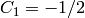, 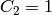, 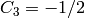, along with the singularity of gradient at the re-entrant corner are shown in the following figures:
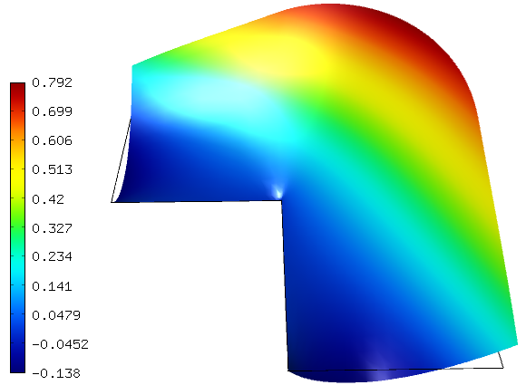
Newton BC¶
Git reference: Tutorial example 06-bc-newton. Long version: 06-bc-newton-long.
Another common natural boundary condition is the Newton (sometimes called Robin) condition of the form
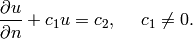
Analogously to Neumann conditions, also Newton conditions yield surface integrals. However, this time they are both in the bilinear form and in the linear form, The bilinear form is a sum of volume and surface forms that can be added to the weak formulation using the methods add_matrix_form() and add_matrix_form_surf(). The surface bilinear form must have the following prototype:
template<typename Real, typename Scalar>
Scalar bilinear_form_surf(int n, double *wt, Func<Scalar> *u_ext[], Func<Real> *u, Func<Real> *v, Geom<Real> *e, ExtData<Scalar> *ext);
Inside this function you can use predefined forms such as int_u_v, int_F_u_v (see the file src/integrals_h1.h) or your custom forms.
The following code snippet contains the linear and bilinear forms:
template<typename Real, typename Scalar>
Scalar bilinear_form(int n, double *wt, Func<Scalar> *u_ext[], Func<Real> *u, Func<Real> *v, Geom<Real> *e, ExtData<Scalar> *ext)
{
return int_grad_u_grad_v<Real, Scalar>(n, wt, u, v);
}
template<typename Real, typename Scalar>
Scalar bilinear_form_surf(int n, double *wt, Func<Scalar> *u_ext[], Func<Real> *u, Func<Real> *v, Geom<Real> *e, ExtData<Scalar> *ext)
{
return H * int_u_v<Real, Scalar>(n, wt, u, v);
}
template<typename Real, typename Scalar>
Scalar linear_form_surf(int n, double *wt, Func<Scalar> *u_ext[], Func<Real> *v, Geom<Real> *e, ExtData<Scalar> *ext)
{
return T0 * H * int_v<Real, Scalar>(n, wt, v);
}
Here, 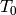 is the exterior temperature, and  is the heat flux.
The above forms are registered using:
is the heat flux.
The above forms are registered using:
// Initialize the weak formulation.
WeakForm wf;
wf.add_matrix_form(callback(bilinear_form));
wf.add_matrix_form_surf(callback(bilinear_form_surf), NEWTON_BDY);
wf.add_vector_form_surf(callback(linear_form_surf), NEWTON_BDY);
Here NEWTON_BDY is the boundary marker for the Newton boundary. The following figures show the solution and singularity of gradient at the re-entrant corner:


Determination of Quadrature Orders in Weak Forms¶
You may wonder why templates are used in the definition of weak forms. As a matter of fact, they do not have to be, as we will see in a moment. However, if the weak form only contains algebraic operations (without if-then statements and such), templates help to determine numerical integration orders automatically. In higher-order FEM, basis and test functions may have very different polynomial degrees, ranging from one and some maximum polynomial degree (currently 10 in Hermes). The basis and test functions can be combined inside the weak forms in many different ways. As a result, the minimum quadrature order which is needed to evaluate a weak form accurately may vary between zero (product of gradients of two linear functions) to infinity (whenever a nonpolynomial expression is present). Numerical quadrature is one of the trickiest issues in higher-order FEM.
A brute-force solution to this problem would be to integrate everything using a maximum order, but this would lead to tremendous computing times. Therefore Hermes offers two options: the polynomial degree of the integrated expressions can be detected automatically (via templates), or the user can define for each weak form the quadrature order explicitly. If the weak form only contains polynomial expressions, the former approach works very well. If the form is more complicated, it is recommended to handle the integration orders explicitly.
Automatic determination of quadrature order¶
In example 03-poisson, the bilinear and linear forms were defined using templates,
// return the value \int \nabla u . \nabla v dx
template<typename Real, typename Scalar>
Scalar bilinear_form(int n, double *wt, Func<Scalar> *u_ext[], Func<Real> *u, Func<Real> *v, Geom<Real> *e, ExtData<Scalar> *ext)
{
return int_grad_u_grad_v<Real, Scalar>(n, wt, u, v);
}
// return the value \int v dx
template<typename Real, typename Scalar>
Scalar linear_form(int n, double *wt, Func<Scalar> *u_ext[], Func<Real> *v, Geom<Real> *e, ExtData<Scalar> *ext)
{
return CONST_F * int_v<Real, Scalar>(n, wt, v);
}
and registered using the callback() macro,
// initialize the weak formulation
WeakForm wf();
wf.add_matrix_form(callback(bilinear_form));
wf.add_vector_form(callback(linear_form));
The callback() macro, defined in src/forms.h by
#define callback(a) a<double, scalar>, a<Ord, Ord>
expands the above add_matrix_form() and add_vector_form() functions into
// initialize the weak formulation
WeakForm wf();
wf.add_matrix_form(bilinear_form<double, scalar>, bilinear_form<Ord, Ord>);
wf.add_vector_form(linear_form<double, scalar>, linear_form<Ord, Ord>);
For those who are not familiar with templates, they make it possible to call the same function with different parameter types. In particular, using bilinear_form<double, scalar> and bilinear_form<Ord, Ord> for the bilinear form defined above gives
scalar bilinear_form(int n, double *wt, Func<scalar> *u_ext[], Func<double> *u, Func<double> *v, Geom<double> *e, ExtData<scalar> *ext)
{
return int_grad_u_grad_v<double, scalar>(n, wt, u, v);
}
Ord bilinear_form(int n, double *wt, Func<Ord> *u_ext[], Func<Ord> *u, Func<Ord> *v, Geom<Ord> *e, ExtData<Ord> *ext)
{
return int_grad_u_grad_v<Ord, Ord>(n, wt, u, v);
}
The <double, scalar> copy is used to obtain the result of the numerical integration, the <Ord, Ord> copy for automatic evaluation of the quadrature order. The parser (see src/forms.h) works well for algebraic expressions. If the weak form bilinear_form() is complicated, one can create and register a simpler weak form bilinear_form_order() for the parser, that provides an arbitrary expression with the same polynomial degree as the integrand in bilinear_form(). Then the two functions would be registered as
wf.add_matrix_form(bilinear_form, bilinear_form_order);
Of course the same holds for linear forms. If the bilinear form contains things like the if-then statement, it cannot be parsed. Whenever the weak form contains non-polynomial expressions or is otherwise very complicated, it is recommended to handle the quadrature orders manually.
Manual determination of quadrature order¶
The polynomial degree of basis and test functions inside a bilinear or linear form can be handled manually as follows
Ord bilinear_form_order(int n, double *wt, Func<Ord> *u_ext[], Func<Ord> *u,
Func<Ord> *v, Geom<Ord> *e, ExtData<Ord> *ext)
{
int uo = u->val[0].get_order();
int vo = v->val[0].get_order();
return Ord(uo + vo); // this would correspond to integral of u times v
}
It is also possible to return a constant order (for example 5) by using
Ord bilinear_form_ord(int n, double *wt, Func<Ord> *u_ext[], Func<Ord> *u,
Func<Ord> *v, Geom<Ord> *e, ExtData<Ord> *ext)
{
return Ord(5);
}
Currently, one cannot make the integration order dependent on spatial coordinates and such. However, one can assign different weak forms to elements with different material markers. This is described in examples iron-water, saphir and others.
The following example handles quadrature orders manually.
General 2nd-Order Linear Equation (07)¶
Git reference: Tutorial example 07-general. Long version: 07-general-long.
This example deals with a linear second-order equation of the form
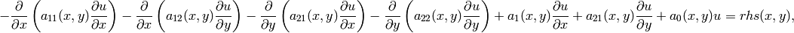
equipped with Dirichlet and/or Neumann boundary conditions. Its goal is to show how to use space-dependent coefficients and how to define quadrature orders explicitly.
First we define the (generally) non-constant equation coefficients:
double a_11(double x, double y) {
if (y > 0) return 1 + x*x + y*y;
else return 1;
}
and so on. Then we define boundary conditions as usual. The weak formulation contains both volumetric and surface integrals.
The Ord class in Hermes (see the file src/forms.h) provides an automatic parser of weak forms that is able to determine the integration orders for algebraic expressions. So, in order to define an integration order explicitly, one can provide on top the weak form another function that defines a simple algebraic expression that leads the parser to the desired polynomial degree. The values defined in this additional function are not used for computation.
// (Volumetric) bilinear form
template<typename Real, typename Scalar>
Scalar bilinear_form(int n, double *wt, Func<Scalar> *u_ext[], Func<Real> *u, Func<Real> *v, Geom<Real> *e, ExtData<Scalar> *ext)
{
Scalar result = 0;
for (int i=0; i < n; i++) {
double x = e->x[i];
double y = e->y[i];
result += (a_11(x, y)*u->dx[i]*v->dx[i] +
a_12(x, y)*u->dy[i]*v->dx[i] +
a_21(x, y)*u->dx[i]*v->dy[i] +
a_22(x, y)*u->dy[i]*v->dy[i] +
a_1(x, y)*u->dx[i]*v->val[i] +
a_2(x, y)*u->dy[i]*v->val[i] +
a_0(x, y)*u->val[i]*v->val[i]) * wt[i];
}
return result;
}
// Integration order for the bilinear form
Ord bilinear_form_ord(int n, double *wt, Func<Ord> *u_ext[], Func<Ord> *u,
Func<Ord> *v, Geom<Ord> *e, ExtData<Ord> *ext)
{
return u->val[0] * v->val[0] * e->x[0] * e->x[0]; // returning the sum of the degrees of the basis
// and test function plus two
}
// Surface linear form (natural boundary conditions)
template<typename Real, typename Scalar>
Scalar linear_form_surf(int n, double *wt, Func<Scalar> *u_ext[], Func<Real> *v, Geom<Real> *e, ExtData<Scalar> *ext)
{
return int_F_v<Real, Scalar>(n, wt, g_N, v, e);
}
// Integration order for surface linear form
Ord linear_form_surf_ord(int n, double *wt, Func<Ord> *u_ext[], Func<Ord> *v, Geom<Ord> *e, ExtData<Ord> *ext)
{
return v->val[0] * e->x[0] * e->x[0]; // returning the polynomial degree of the test function plus two
}
// Volumetric linear form (right-hand side)
template<typename Real, typename Scalar>
Scalar linear_form(int n, double *wt, Func<Scalar> *u_ext[], Func<Real> *v, Geom<Real> *e, ExtData<Scalar> *ext)
{
return int_F_v<Real, Scalar>(n, wt, rhs, v, e);
}
// Integration order for the volumetric linear form
Ord linear_form_ord(int n, double *wt, Func<Ord> *u_ext[], Func<Ord> *v, Geom<Ord> *e, ExtData<Ord> *ext)
{
return v->val[0] * e->x[0] * e->x[0]; // returning the polynomial degree of the test function plus two
}
Note the sign of the surface linear form - when using the LinearProblem class, all linear forms have to be on the right-hand side and all bilinear forms on the left.
The output of this example is shown below:
Systems of Equations (08)¶
Git reference: Tutorial example 08-system. Long version 08-system-long.
So far we have just solved single linear PDE problems with a weak formulation
of the form , where 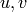 were continuous approximations in the
 space. One can also solve equations whose solutions lie in the spaces
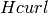, 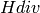 or
space. One can also solve equations whose solutions lie in the spaces
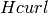, 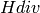 or  , and one can combine these spaces for PDE systems.
, and one can combine these spaces for PDE systems.
Here we show how to handle systems of linear PDE whose weak formulation is written as
(4)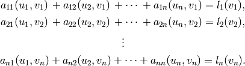
The solution  and test functions 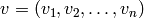 belong to the space 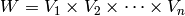, where each 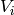 is one of the available function spaces ,
and test functions 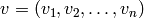 belong to the space 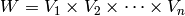, where each 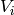 is one of the available function spaces ,
 ,
,  or . The resulting discrete matrix problem will have
an
or . The resulting discrete matrix problem will have
an  block structure.
block structure.
Let us illustrate this by solving a simple problem of linear elasticity. Consider a two-dimensional elastic body shown in the following figure (the bottom edge is axis of planar symmetry):

In the plane-strain model of linear elasticity the goal is to determine the
deformation of the body subject to the forces  . The deformation is sought
as a vector function 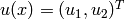, describing the displacement of each point
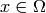 after the load 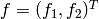 is applied.
. The deformation is sought
as a vector function 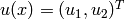, describing the displacement of each point
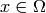 after the load 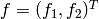 is applied.
The boundary conditions are
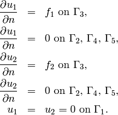
Applying the standard procedure to the elastostatic equilibrium equations, we arrive at the following weak formulation:
![\begin{eqnarray*} \int_\Omega (2\mu\!+\!\lambda)\dd{u_1}{x_1}\dd{v_1}{x_1} + \mu\dd{u_1}{x_2}\dd{v_1}{x_2} + \mu\dd{u_2}{x_1}\dd{v_1}{x_2} + \lambda\dd{u_2}{x_2}\dd{v_1}{x_1} \,\mbox{d}\bfx \!\!&=&\!\!\! \int_{\Gamma_3} \!\!f_1 v_1 \,\mbox{d}S, \\ \smallskip \int_\Omega \mu\dd{u_1}{x_2}\dd{v_2}{x_1} + \lambda\dd{u_1}{x_1}\dd{v_2}{x_2} + (2\mu\!+\!\lambda)\dd{u_2}{x_2}\dd{v_2}{x_2} + \mu\dd{u_2}{x_1}\dd{v_2}{x_1} \,\mbox{d}\bfx \!\!&=&\!\!\! \int_{\Gamma_3} \!\!f_2 v_2 \,\mbox{d}S. \end{eqnarray*}](../../_images/math/06ac202d874b7054806e7a80db30956b1e76e6d9.png)
We see that the weak formulation can indeed be written in the form (4):
![\begin{eqnarray*}
a_{11}(u_1, v_1) \!&=&\! \int_\Omega (2\mu+\lambda)\dd{u_1}{x_1}\dd{v_1}{x_1} + \mu\dd{u_1}{x_2}\dd{v_1}{x_2} \,\mbox{d}\bfx, \\
a_{12}(u_2, v_1) \!&=&\! \int_\Omega \mu\dd{u_2}{x_1}\dd{v_1}{x_2} + \lambda\dd{u_2}{x_2}\dd{v_1}{x_1} \,\mbox{d}\bfx,\\
a_{21}(u_1, v_2) \!&=&\! \int_\Omega \mu\dd{u_1}{x_2}\dd{v_2}{x_1} + \lambda\dd{u_1}{x_1}\dd{v_2}{x_2} \,\mbox{d}\bfx,\\
a_{22}(u_2, v_2) \!&=&\! \int_\Omega (2\mu+\lambda)\dd{u_2}{x_2}\dd{v_2}{x_2} + \mu\dd{u_2}{x_1}\dd{v_2}{x_1} \,\mbox{d}\bfx, \\
l_{1}(v_1) \!&=&\!
\int_{\Gamma_3} \!\!f_1 v_1 \,\mbox{d}S, \\
l_{2}(v_2) \!&=&\!
\int_{\Gamma_3} \!\!f_2 v_2 \,\mbox{d}S.
\end{eqnarray*}](../../_images/math/70391bbac1bd14323064ed16890f7a5fbaebd5d9.png)
Here,  and
and  are material constants (Lame coefficients) defined as
are material constants (Lame coefficients) defined as
where  is the Young modulus and
is the Young modulus and  the Poisson ratio of the material. For
steel, we have GPa and . The load is N.
the Poisson ratio of the material. For
steel, we have GPa and . The load is N.
We begin with defining the function spaces for the two solution
components,  and
and  (the
(the  and
and  displacement). The boundary
conditions can be implemented as follows:
displacement). The boundary
conditions can be implemented as follows:
// Boundary condition types.
BCType bc_types(int marker)
{ return (marker == 1) ? BC_ESSENTIAL : BC_NATURAL;; }
// Essential (Dirichlet) boundary condition values.
scalar essential_bc_values(int ess_bdy_marker, double x, double y)
{ return 0; }
Next we create two displacement spaces:
// Create x- and y- displacement spaces using default H1 shapesets.
H1Space xdisp(&mesh, bc_types, essential_bc_values, P_INIT);
H1Space ydisp(&mesh, bc_types, essential_bc_values, P_INIT);
The WeakForm instance is initialized for a system of two equations:
// initialize the weak formulation
WeakForm wf(2);
wf.add_matrix_form(0, 0, callback(bilinear_form_0_0), H2D_SYM); // Note that only one symmetric part is
wf.add_matrix_form(0, 1, callback(bilinear_form_0_1), H2D_SYM); // added in the case of symmetric bilinear
wf.add_matrix_form(1, 1, callback(bilinear_form_1_1), H2D_SYM); // forms.
wf.add_vector_form_surf(0, callback(linear_form_surf_0), GAMMA_3_BDY);
wf.add_vector_form_surf(1, callback(linear_form_surf_1), GAMMA_3_BDY);
In the registration of matrix and vector forms, the block index 0, 0 means that bilinear_form_0_0() takes basis functions from space 0 (x-displacement space) and test functions from space 0. The block index 0, 1 means that bilinear_form_0_1 takes basis functions from space 0 and test functions from space 1 (y-displacement space), etc. This yields a 2x2 block structure in the resulting matrix system.
Also explanation of the extra parameter H2D_SYM in add_matrix_form() is in order.
Since the two diagonal forms  and are symmetric, i.e.,
, Hermes can be told to only evaluate them once for the
two cases and to speed up assembly. In fact, we should have
used the H2D_SYM flag already in the previous sections, since the form
was symmetric. Of course this is not the case
for all forms and so the default value of the fourth parameter of add_matrix_form()
is H2D_UNSYM.
and are symmetric, i.e.,
, Hermes can be told to only evaluate them once for the
two cases and to speed up assembly. In fact, we should have
used the H2D_SYM flag already in the previous sections, since the form
was symmetric. Of course this is not the case
for all forms and so the default value of the fourth parameter of add_matrix_form()
is H2D_UNSYM.
The off-diagonal forms and are not (and cannot) be symmetric, since their arguments come from different spaces in general. However, we can see that , i.e., the corresponding blocks of the local stiffness matrix are transposes of each other. Here, the H2D_SYM flag has a different effect: it tells Hermes to take the block of the local stiffness matrix corresponding to the form , transpose it and copy it where a block corresponding to would belong, without evaluating at all (this is why we don’t add bilinear_form_1_0). This again speeds up the matrix assembly. You can also use the flag H2D_ANTISYM, which moreover inverts the sign of the block. This makes sense in the case where .
It is recommended that you start with the default (and safe) H2D_UNSYM flag for all forms when developing your project, and only optimize the evaluation of the forms when the code works well.
When the spaces and weak forms are ready, one can use the function solve_linear() to assemble and solve the discrete problem:
// Solve the linear problem.
Solution u_sln, v_sln;
solve_linear(Tuple<Space *>(&u_space, &v_space), &wf,
Tuple<Solution*>(&u_sln, &v_sln), matrix_solver);
Von Mises stress can be visualized via the VonMises filter as follows:
// Visualize the solution.
WinGeom* sln_win_geom = new WinGeom(0, 0, 800, 400);
ScalarView view("Von Mises stress [Pa]", sln_win_geom);
VonMisesFilter stress(Tuple<MeshFunction*>(&u_sln, &v_sln), lambda, mu);
view.show_mesh(false);
view.show(&stress, H2D_EPS_HIGH, H2D_FN_VAL_0, &u_sln, &v_sln, 1.5e5);
We will say more about visualization and Filters in a moment, after showing the long version of this example.
Long Version of Example 08¶
Git reference: Tutorial example 08-system-long.
As in example 03, the long version of this example does not employ the function solve_linear(). Instead, after initializing the weak formulation, one initializes the LinearProblem class, selects a matrix solver, assembles the matrix problem, solves it, and translates the resulting coefficient vector into Solutions:
// Initialize the linear problem.
LinearProblem lp(&wf, Tuple<Space *>(&u_space, &v_space));
// Select matrix solver.
Matrix* mat; Vector* rhs; CommonSolver* solver;
init_matrix_solver(matrix_solver, ndof, mat, rhs, solver);
// Assemble stiffness matrix and rhs.
lp.assemble(mat, rhs);
// Solve the matrix problem.
if (!solver->solve(mat, rhs)) error ("Matrix solver failed.\n");
// Convert coefficient vector into a Solution.
Solution* u_sln = new Solution(&u_space, rhs);
Solution* v_sln = new Solution(&v_space, rhs);
Visualization and Filters¶
In elasticity problems one often wants to see the material stress, which is obtained by a formula that combines the derivatives of the two displacement components. Hermes implements postprocessing through Filters. Filter is a special class which takes up to three Solutions, performs some computation and in the end acts as another Solution (which can be visualized, passed into another Filter, passed into a weak form, etc.). More advanced usage of Filters will be discussed later. In elasticity examples we typically use the predefined VonMisesFilter:
VonMisesFilter stress(Tuple<MeshFunction*>(u_sln, v_sln), lambda, mu);
view.show_mesh(false);
view.show(&stress, H2D_EPS_HIGH);
The second line tells Hermes not to display mesh edges. The second parameter of show() is the visualization accuracy. It can have the values H2D_EPS_LOW, H2D_EPS_NORMAL (default) and H2D_EPS_HIGH. This parameter influences the number of linear triangles that Hermes uses to approximate higher-order polynomial solutions within finite elements. Using linear triangles is required by OpenGL, so Hermes at least performs automatic adaptivity to reduce their number to a minimum. The above parameters are used to set the accuracy of this piecewise-linear approximation.
The method show() has an optional third parameter to indicate whether function values or partial derivatives should be displayed. For example, H2D_FN_VAL_0 stands for the function value of solution component 0 (first solution component which in this case is the VonMises stress). H2D_FN_VAL_1 would mean the function value of the second solution component (relevant for vector-valued or elements only), H2D_FN_DX_0 means the x-derivative of the first solution component, etc.
Finally, in elasticity problems it may be desirable to deform the computational domain according to the calculated displacements. The method View::show() has additional three optional parameters for this:
VonMisesFilter stress(Tuple<MeshFunction*>(&u_sln, &v_sln), lambda, mu);
view.show(&stress, H2D_EPS_HIGH, H2D_FN_VAL_0, &u_sln, &v_sln, 1.5e5);
Here the fourth and fifth parameters are the displacement components used to distort the domain geometry, and the sixth parameter is a scaling factor to multiply the displacements. Of course, the color map still shows the Von Mises stress as before.

Time-Dependent Problems (09)¶
Git reference: Tutorial example 09-timedep.
This section describes the implementation of a simple time-dependent heat transfer model that describes, in a naive approximation, how the St. Vitus cathedral in Prague responds to changes in the surrounding air temperature during one 24-hour cycle. The geometry is shown below:

We will solve the standard heat transfer equation
(5)
equipped with a Dirichlet condition
on the bottom edge and a Newton condition
on the rest of the boundary . Here,  is the heat capacity of the material,
is the heat capacity of the material,
 the material density, the thermal conductivity,
the material density, the thermal conductivity,
 the fixed temperature on the
ground (same as the initial temperature of the building), and
the fixed temperature on the
ground (same as the initial temperature of the building), and  the heat transfer coefficient
between the building and the surrounding air. The surrounding air temperature
the heat transfer coefficient
between the building and the surrounding air. The surrounding air temperature
 is time-dependent of the form
is time-dependent of the form
where is 24 hours (translated into seconds).
Equation (5) is also equipped with an initial condition of the form

For simplicity we will use the implicit Euler method with a constant
time step  , which transforms equation (5) into
, which transforms equation (5) into
The corresponding weak formulation is
The implementation starts by defining the boundary condition types:
BCType bc_types(int marker)
{
if (marker == bdy_ground) return BC_ESSENTIAL;
else return BC_NATURAL;
}
and values:
scalar essential_bc_values(int ess_bdy_marker, double x, double y)
{
if (ess_bdy_marker == bdy_ground) return T_INIT;
}
Then the space for the temperature  is set up:
is set up:
// Initialize an H1 space with default shepeset.
H1Space space(&mesh, bc_types, essential_bc_values, P_INIT);
int ndof = get_num_dofs(&space);
Bilinear and linear forms are defined as follows:
template<typename Real, typename Scalar>
Scalar bilinear_form(int n, double *wt, Func<Scalar> *u_ext[], Func<Real> *u, Func<Real> *v, Geom<Real> *e, ExtData<Scalar> *ext)
{
return HEATCAP * RHO * int_u_v<Real, Scalar>(n, wt, u, v) / TAU +
LAMBDA * int_grad_u_grad_v<Real, Scalar>(n, wt, u, v);
}
template<typename Real, typename Scalar>
Scalar linear_form(int n, double *wt, Func<Scalar> *u_ext[], Func<Real> *v, Geom<Real> *e, ExtData<Scalar> *ext)
{
return HEATCAP * RHO * int_u_v<Real, Scalar>(n, wt, ext->fn[0], v) / TAU;
}
template<typename Real, typename Scalar>
Scalar bilinear_form_surf(int n, double *wt, Func<Scalar> *u_ext[], Func<Real> *u, Func<Real> *v, Geom<Real> *e, ExtData<Scalar> *ext)
{
return LAMBDA * ALPHA * int_u_v<Real, Scalar>(n, wt, u, v);
}
template<typename Real, typename Scalar>
Scalar linear_form_surf(int n, double *wt, Func<Scalar> *u_ext[], Func<Real> *v, Geom<Real> *e, ExtData<Scalar> *ext)
{
return LAMBDA * ALPHA * temp_ext(TIME) * int_v<Real, Scalar>(n, wt, v);
}
Next we need to initialize the previous solution tsln with the initial condition .
Besides holding the finite element solution, the Solution class
can be forced to return zero, to return a constant, or to return an arbitrary function
using the methods set_zero(), set_const() and set_exact(), respectively.
Here we simply call set_const() and supply the initial temperature:
// Set constant initial condition.
Solution tsln;
tsln.set_const(&mesh, T_INIT);
The weak forms are registered as follows:
// Initialize weak formulation.
WeakForm wf();
wf.add_matrix_form(bilinear_form<double, double>, bilinear_form<Ord, Ord>);
wf.add_matrix_form_surf(bilinear_form_surf<double, double>, bilinear_form_surf<Ord, Ord>, bdy_air);
wf.add_vector_form(linear_form<double, double>, linear_form<Ord, Ord>, H2D_ANY, &tsln);
wf.add_vector_form_surf(linear_form_surf<double, double>, linear_form_surf<Ord, Ord>, bdy_air);
Next, the LinearProblem class and the matrix solver structures are initialized:
// Initialize the linear problem.
LinearProblem lp(&wf, &space);
// Initialize matrix solver.
Matrix* mat; Vector* rhs; CommonSolver* solver;
init_matrix_solver(matrix_solver, ndof, mat, rhs, solver);
We are now ready to start the iterative process. Since the stiffness matrix does not depend on the solution, it only needs to be assembled once in the first time step. For all remaining time steps it will be the same, and we just need to re-construct the load vector. This is done via the Boolean variable rhsonly which is set to false before the time stepping begins. For completeness, we show the entire time stepping loop below:
bool rhsonly = false;
for(int ts = 1; ts <= nsteps; ts++)
{
info("---- Time step %d, time %3.5f, ext_temp %g", ts, TIME, temp_ext(TIME));
// Assemble stiffness matrix and rhs.
lp.assemble(mat, rhs, rhsonly);
rhsonly = true;
// Solve the matrix problem.
if (!solver->solve(mat, rhs)) error ("Matrix solver failed.\n");
// Update tsln.
tsln.set_coeff_vector(&space, rhs);
// Update the time variable.
TIME += TAU;
// Visualize the solution.
sprintf(title, "Time %3.2f, exterior temperature %3.5f", TIME, temp_ext(TIME));
Tview.set_title(title);
Tview.show(&tsln);
}